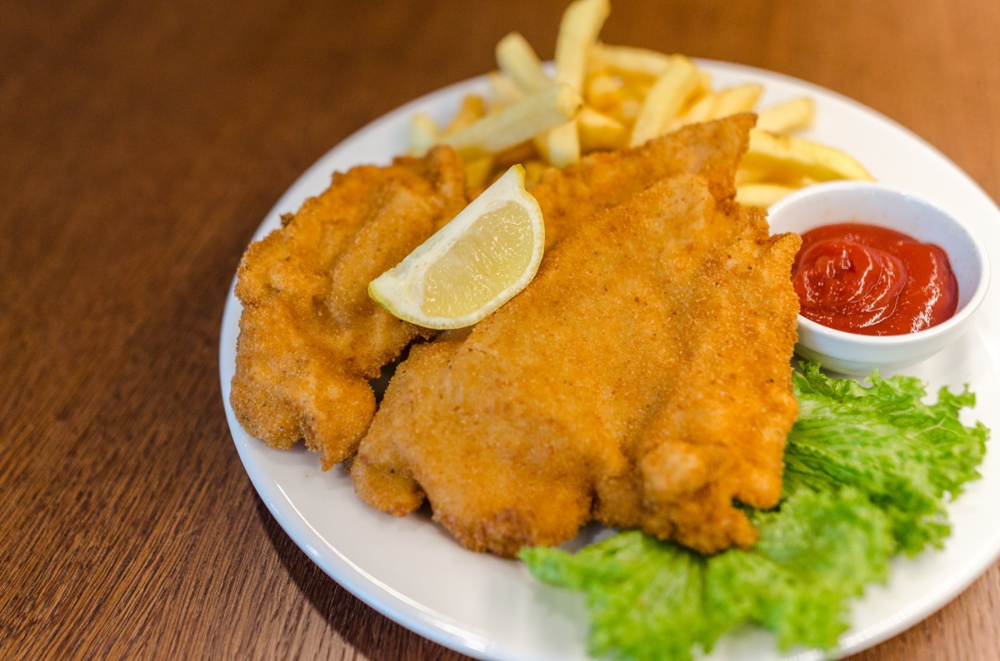

Milanesas de Pollo
Home

Estas milanesas de pollo son crujientes y sabrosas.¡Una delicia!
Ingredientes
- 4 pechugas de pollo
- 1 taza de pan rallado
- 2 huevos
- 1/2 taza de harina
- Sal y pimienta al gusto
Instrucciones
- Precalentar el horno a 200°C (400°F).
- Pasar las pechugas de pollo por harina, luego por huevo batido y finalmente por pan rallado.
- Colocar las milanesas en una bandeja para hornear y rociar con aceite.
- Hornear durante 25-30 minutos o hasta que estén doradas.